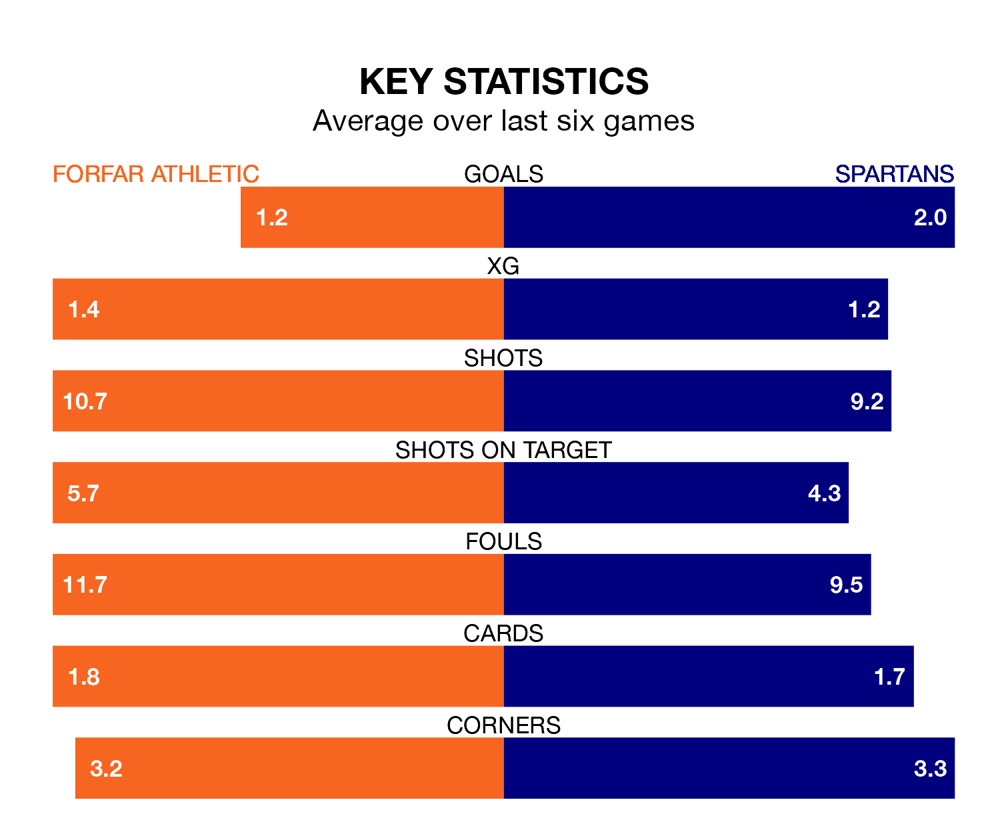

Mid-season relegation candidates Forfar Athletic face a challenge against high-flying Spartans at Station Park on Saturday.
Forfar Athletic are eighth in the League Two table, and have picked up four wins and nine draws in their 21 games to date.
The Spartans, meanwhile, are third in the standings with 36 points, having won 10 and drawn six of their first 20 matches, and are 16 points behind table-toppers Stenhousemuir.
With 20 goals in 21 games so far this season, Forfar are the league's second-lowest scorers with 1.0 goals per game. But they are conceding fewer than average too, letting in 26 goals at a rate of 1.2 per game.
Spartans, meanwhile, are above average scorers, with 1.8 goals per game, compared to a league average of 1.4. They have conceded 1.1 goals per game.
In Blair Henderson, the Spartans have one of the league's most on-form strikers so far this season. He has notched 12 goals in 20 appearances, to sit second in the scoring charts.
Athletic's top scorers, with five goals each, are Sebastian Ross and Stuart Morrison.
The Loons are in mixed form in League Two, with two wins and two draws from their last six games.
With four wins and a draw over that period, the visitors' form is better – they have taken 13 points from 18, compared to the home team's eight.
Over the last two years, Forfar and Spartans have played each other twice. Spartans won one of them and they drew the other.
Their last meeting was on December 9, when Spartans won 1-0 at home.
Forfar's last match was on January 27, a 0-0 draw against Bonnyrigg Rose Athletic.
Spartans beat East Fife 3-0 last time out, on Tuesday, with Henderson on the scoresheet.
Saturday's match will be refereed by Lloyd Wilson, who has taken charge of two League Two games so far this season, issuing no red cards and booking nine players. He has awarded one penalty.
He is yet to oversee a match featuring either Forfar or Spartans this season.
Updated: 15:45 (UTC), 02/02/24